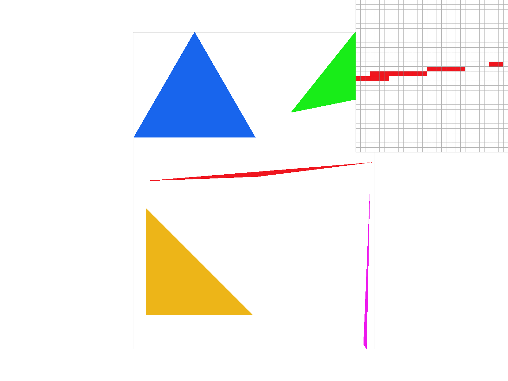
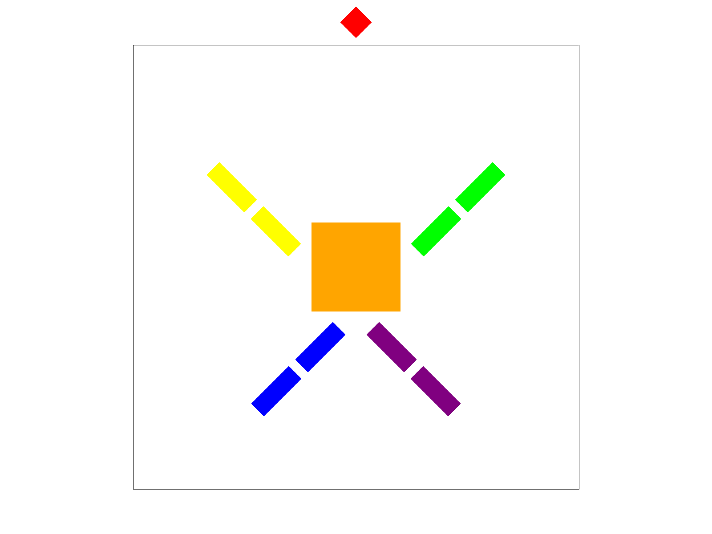
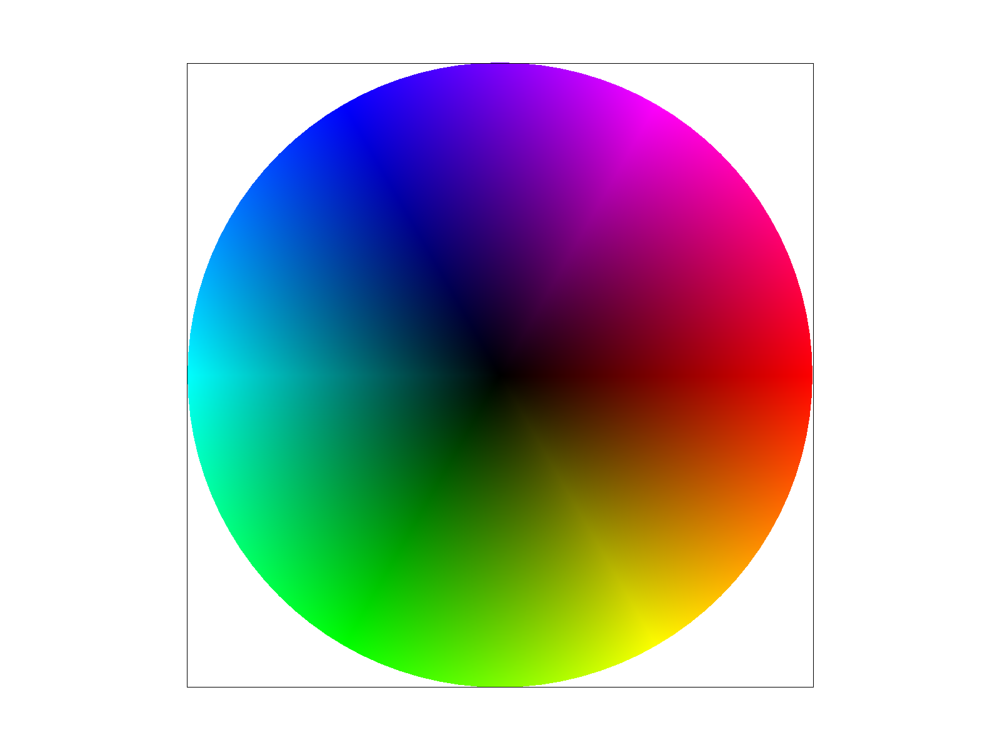

Overview
Throughout this project, we built a rasterizer and implemented many different sampling methods for this rasterizer in hopes that every next thing we implemented would serve as an improvement and cause for our rasterized images to look better than before. We implemented a basic rasterizer, added support for supersampling to this rasterizer, enabled the rasterized to perform linear transforms, extended the rasterizers ability of rendering flat colors to the ability to render a range of colors in a gradient, and implemented features to sample textures at both the pixel level and mipmap level. While we thought that each feature would produce a better looking image than the last, the reality is that each of these features that we implemented should be used in conjunction with one another, as not one feature is necessarily superior to another.
We learned a great deal about the rasterization pipeline, including how samples of SVG files are stored and displayed. The data structures used in this project were challenge to work with at first, but became easier as we became better at understanding and learned to visualize how to move between things like the sample and frame buffers, or between pixels and texels. We learned that rasterizing images isn't just as simple as showing it on the screen, but instead involves filling in shapes and mapping textures to these shapes. This was especially true when the shapes we were rasterizing images onto weren't basic polygons. Even when images are rasterized, there's so much more we can do in order to produce a better looking image. We learned that against all odds, we can help a binary system begin to understand the vision of a continuous world through smoothing and anti-aliasing that come from our sampling techniques.
Section I: Rasterization
Part 1: Rasterizing single-color triangles
For part 1 of this project, we implemented rasterization of a triangle specified by 3 (x,y) coordinates on our frame buffer. The main logic behind rasterizing a triangle given this information was to perform 3 line tests, which each determine whether a point is above the line or on its border (we specify "above" to be with respects to the triangle; that is, for each line the makes up the triangle, we check if a point lies on the side of the line that faces the interior of the triangle). Specifically, we were checking the location of the center of the point with respects to each of the lines. If we find that a point lies above or on each line (i.e. the point lies in the face of the triangle), then we fill the pixel corresponding to that point. The equation we used to determine whether a point was above a line or not came from Lecture 2, slide 48.
In our initial approach, we had scanned through all of the points in the frame buffer and checked whether these points fell inside the triangle being specified by the .svg files. However, this comes to be extremely inefficient as the number of triangles to be rasterize increases. We'd have to do a full scan of the frame buffer each time we needed to rasterize a triangle, which is really expensive. To combat this, we thought about restricting the number of points we look at to be those in the vicinity of the points that specify our triangle. Logically, this makes the most sense as the only points that have any chance of being rasterized with a color would be those closest to our triangle and its vertices.
That said, we chose to find a bounding box for each triangle to be rasterized. To do this, we simply looked at the minimum and maximum x and y values of our vertices, as we could say with certainty that all of the points that would be colored would fall in these ranges. Now, our rasterizer looks only at a small subset of the entire frame buffer, which is much more feasible when we have more triangles to rasterize. Our algorithm checks only each sample within the bounding box of the triangle, thus is performs no worse than one that checks each sample within the bounding box of the triangle.
One issue that came up when we were implementing the triangle rasterizer was certain triangles not being colored in when they were supposed to be. This was evident when running our initial implementation on basic/test6.svg; we observed that some hexagons and stars were not being rasterized properly. We found that this was because we were checking that each point in the bounding box was above each line, when another valid way to determine whether a point should be colored was if all points were below each line. With some help with our classmates on edStem (namely, Jonathan Wang and his post #81fa on edStem), we determined that this issue was related to the winding order of the triangles vertices. We assumed that all of the vertices of each triangle to be rasterized would have same winding order direction (either clockwise or counter-clockwise), and if this assumption were always true then our initial implementation would have worked perfectly fine. However, this was not in fact the correct assumption. So, we implemented a helper function to determine whether the winding order was consistent with those triangles that have successfully been rasterised in our initial implementation, and if the winding order was not what we expected, we changed the order of the vertices such that they were consistent with prior winding order. With this implemented, our triangle rasterizer was made complete!

|

|
|

|
Part 2: Antialiasing triangles
For part 2 of this project, we implemented antialiasing by supersampling in order to combat the issues of discontinuity in our resulting image. The big idea for antialiasing is to increase the sample rate of the rasterizer. This means that as the sample rate increases, the number of points we look at to determine whether a pixel is colored or not increases. For our implementation, this meant we had to now consider looking at other locations within a point besides its center. With a successful impementation, the rasterized triangles should appear to have less aliasing and look smoother and without discontinuities.
Our supersampling algorithm is fairly involved. The big change we made to the implementation we had in part 1 of this project was to now, for each point in the frame buffer, look at some number of "subpoints" within the point as determined by the sample rate. Recall that in the first part, we were merely looking at the center of each point to determine whether a pixel should be colored or not. While this worked, it was very specific to the case where our sample rate was 1. Now that we are increasing our sampling rate, we thought it would be more appropriate to look at a number of subpoints equal to the sample rate. This effectively means we would be using more points to determine whether a pixel should be colored in the resulting frame buffer. For each of these subpoints, we'd similarly run them through line tests to determine if they should be colored in our sample buffer. Our sample buffer is an upsized version of our frame buffer, whose dimensions are scaled by a factor of sqrt(sample rate) x sqrt(sample_rate). When these sample buffer is later resolved to our frame buffer, the average color of each of the points in the sample buffer that correpond to the point of interest in the frame buffer would be calculated, and the point of interest in the frame buffer would be rasterized with that color.
For a more concrete example, suppose we had an image of size 3x3 in the frame buffer and we had a sample rate of 9. Thus, the size of our resulting sample buffer would be 9x9. The point (1,1) in the frame buffer would then correspond the a square (or block) of pixels in the sample buffer of size 3x3 described with the coordinates (3, 3) for the top left of the block, and (5, 5) for the bottom right of the block. When the sample buffer is being resolved to the frame buffer, we take the average color over this block to determine that color that should be rasterized at (1,1) in the frame buffer. This is done for each pixel in the frame buffer during resolving.
The specifics of our algorithm is as follows:- Iterate over each point in the triangle's bounding box (variables of iteration pixel_x and pixel_y, which denote the point we're supersampling)
- For each of these points, iterate over a number subpoints equal to that of the sample rate (variables of iteration are x_i and y_i, which are increments that will help us in determining which subpoints to look at and the location of these subpoints in the sample buffer)
- Determine sample_x and sample_y, which are the subpoints of each point that we are interested in sampling (specifically, these are the centers of each of the divisions of the unit square; that is, for a sample rate of 4, we divide the point of interest into 4 equal squares, and the subpoints we are interested in are the centers of each of these square.)
- Calculate the corresponding index of sample_x and sample_y in the frame buffer (see the picture below to see how we derived this)
- If these subpoints are within bounds and pass the line test, then we set the color of the corresponding point in the sample buffer (at the preivously calculated index) to be the specified color. Otherwise, we don't color that pixel in the sample buffer
Like previously mentioned, when the sample buffer is being resolved to the frame buffer, the average of sample rate number of points will be taken for each pixel in the frame buffer. The result of this algorithm is that now, the points no longer have the property of being colored or not colored. Instead, they take on the average color of the pixels in the sample buffer, which means they may vary in color range. This should help in smoothing out the aliasing that previously occurred in task 1 as such.

|
In this process of implementing our supersampling algorithm, we had to make some changes to our code in part 1 and other existing code. For starters, we changed resolve_to_framebuffer to now take an average of the colors within the sample buffer to determine the resulting color in the frame buffer. We also changed set_framebuffer_target to now consider our sample buffer changing in size based on the sample rate, and we updated set_sample_rate to (as the name suggests) stored the new sample rate of the rasterizer. The bigger changes we made were the fill_pixel and rasterize_triangle. In rasterize_triangle, we decided to no longer call fill_pixel to color our pixels in the sample buffer, as we were able to determine the equation that allows us to map our x,y, xi, and yi values to indices in the sample buffer, and felt that it would be easiest for us to work with the sample buffer directly. fill_pixel was updated to use this new index mapping and to account for the new size of the sample buffer.

|

|

|

|
Above, you can see our supersampling algorithm in action! Here, we are once again looking at basic/test4.svg, but notice that our pixel inspector is now interested in the area near the top vertex of the pink triangle. Notice that with sample rate = 1, there is a noticeable discontinuity in the triangle due to alias for similar reasons as with the red triangle in part 1. When we increase the sample rate to be 4, this discontinuity appears to resolve itself some, but the color of the triangle also fade a bit. This is because in our sample buffer, it is the case that we are taking the average over pixels that are pink and white, resulting in a light pink color spread across a greater area. As the sample rate is increase to be 9, we can see more color pixels (as expected) and that some of the darker pink color returns near the bottom of the pixel inspector. This happens because of the existence of more pink pixels lower in the image. We can also see in the whole image that that the discontinuity is not as apparent as it was when the sample rate was 1, which is great! Finally, increasing the sample rate to 16 has a similar effect as increasing the sample rate to 9, however the tip of the triangle looks smoother overall and looks less jagged. As we can see, increasing the sample rate causes for the resulting image to be blurred some, combatting against aliasing and jaggies. This is, once again, due to the fact we are taking the average of many more pixels from our sample buffer that were once subpixels of the original image, which means our pixels in the frame buffer can now vary in range and are no longer restricted to binary values.
Part 3: Transforms
For part 3 of this project, we implemented basic transformations. These transformations are rotations, translations, and scaling. We implemented each transformation's respective matricesin homogeneous coordinates according to the SVG spec, and now that they're implemented, our rasterizer is now able to transform SVGs using any combination of rotations, translations, and scalings!

|

|
Above, you can see the rasterizations of robot.svg and my_robot.svg. robot.svg only rasterizes properly now that transformations have been implemented, and my_robot.svg is a transformation of robot.svg. The cube person in my_robot.svg demonstrates the different transformations we implemented; all of the cube person's limbs are rotated 45 degrees from their body, and cube person's head has shrunk (scaled down) and translated upward away from his body! The artistic vision here is that cube person is jumping in shock due to their head shrinking and leaving their body (but don't worry, cube person is unharmed). [Note: it is completely intended for cube person's head to be out of the border, for it's actually their reason for being shocked! Nobody would expect their rasterized parts to fall out of the border...]
Section II: Sampling
Part 4: Barycentric coordinates
|

|
For part 4 of this project, we implemented support for barycentric coordinates. Barycentric coordinates are a type of coordinates that describe where a point is relative to vertices of a triangle. For a triangle ABC (where each vertex can be described in x,y coordinates) and an arbitrary (x, y) within this triangle, (x, y) can be described as a linear combination of the vertices like so: (x, y) = alpha * A + beta * B + gamma * C where alpha, beta, and gamma are constants subject to the condition that they sum to 1. If these constants don't sum to 1, then the point (x, y) is outside of the triangle. Assuming that each of these vertices have a color associated with them, we can use barycentric coordinates to determine the what color value the point (x, y) should take. We can treat alpha, beta, and gamma as weights and using this perspective, we can interpret (x, y) as having some color that is "alpha parts" the color of vertex A, "beta parts" the color of vertex B, and "gamma parts" the color of vertex C. One way that may help someone understand the quantities alpha, beta, and gamma is thinking of them as the influence or "pull" their respective vertices have on a point. In other words, alpha describes how much the vertex A pulls a point away from the segment BC, beta describes how much the vertex B pulls a point away from the segment AC, and gamma describes how much the vertex C pulls a point away from the segment AB. We can think of alpha = 1 as vertex A pulling the point the hardest (beta and gamma would be 0), thus by intuition this would result in the point being at vertex A. Extending this to colors, this particular example would suggest that the point would be exactly the color of vertex A. A change in the alpha, beta, and gamma values would "influence" the point's color and change it to be more similar or dissimilar depending on the values.

|
We can see that in the above image that if we rasterized a triangle with purely red, green, and blue vertices using barycentric coordinates that the area of this triangle is a color gradient (that is, between these vertices we can observe how the color changes). The shade of the gradient changes depending on the distance from the vertices, and we can see how the area closer to red takes on a more red shade, the area closer to blue takes on a more blue shade, and the area closer to green takes on a more green shade. As we near the center of the triange (i.e. the location where alpha = beta = gamma), we can see that there is no particular shade of these 3 that stand out, as each vertex now has roughly equal contribution or "influence" on those points' color values. This image reinforces the idea that we can think of alpha, beta, and gamma as "influence" constants!
Part 5: "Pixel sampling" for texture mapping
In this part of the project, we implemented pixel sampling for texture mapping. The first step in pixelsampling is determining the position of the pixel of interest relative to the vertices of the triangle that the pixel belongs to. If you recall, we can do this using barycentric coordinates! Barycentric coordinates becomes useful here as now we have a general set of coordinates that can be used by any triangle, and we can use this fact to generate a mapping between our pixel of interest and a pixel that belongs to a texture. This is exactly what pixel sampling is -- we are identifying the pixels of interest and "sampling" from the texture what colors to fill our frame buffer with by using barycentric coordinates as a medium (you can think of barycentric as a "globally understood language"). We implemented two different types of pixel sampling: nearest-pixel sampling and bilinear sampling.
Nearest-pixel sampling is the simpler of the two methods of pixel sampling. Once we have our barycentric coordinates, we can obtain what our pixel maps to in the texture space. However, the texture space is not necessarily continuous. So, we round our new coordinates to the nearest pixel in the texture space and choose the color as this nearest pixel to be the pixel's own (hence, the namesake of this sampling method). Bilinear sampling, on the other hand, involves doing linear interpolation between the nearest pixels in the texture space. In our implementation, we looked at the four closest pixels surrounding our new coordinates, and from there performed linear interpolation. More specifically, we were interested in the colors of these pixels. We do a total of 3 linear interpolations (2 on the horizontal axis, and 1 on the vertical), and this effectively tries to give us a color that is almost like an average, but not exactly. These linear interpolations try to create a color to assign to our point by interpolating across the existing color values and finding one that is mathematically similar.
We took 8 screenshots to try and show the difference between these two methods:

|

|

|

|

|

|

|

|
We can see how these different sampling methods differ through these images. Notice that for texmap/test1.svg and texmap/test2.svg that our pixel inspector is looking at the lines of the globe. When using nearest-pixel, we can see that there is a fair amount of aliasing and discontinuity in these lines, but when using bilinear sampling, these lines are don't suffer from as much aliasing and are a little better connected. The resulting picture is one that almost looks like there are no breaks in the globe lines, which is favorable because it looks more akin to a real globe! However, for texmap/test4.svg and texmap/test6.svg, we don't notice as significant of a difference. In these examples, our pixel inspector is located somewhere where there's a lot of detail, but the pixel colors are slightly more similar (there is less overall constrast in our pixel colors). There isn't too much of a difference between sampling methods in this case, however it can be said that bilinear sampling does make the lines in these images just slightly smoother. We think the general difference in performance between these two methods is that bilinear sampling does a better job at reducing aliasing than nearest pixel sampling. In cases like the one just previously mentioned where there is less constrast between the pixels, then either method should suffice. There will be a large difference between these two methods when rasterizing thin objects, as bilinear interpolation will try to average out the pixels surrounding the existing pixels for the thin objects in an attempt to reduce aliasing, whereas with nearest pixel there is a chance that the thin object is not even rasterized because the sample pixel is just not close enough. In situations where the color is roughly the same or there aren't as many small details though, both seem to perform nearly the same, with bilinear sampling creating ever so slightly more smoothness.
Part 6: "Level sampling" with mipmaps for texture mapping
In this part of the project, we implemented level sampling with mipmaps for texture mapping. This part of the project builds directly off of the previous part, but instead of changing the method of sampling based on the location of pixels, we are now changing the sampling method based on mipmap levels determined by the change in depth of our textures. That is, for parts of our image/textures that are rasterized and would be seen as farther away, we want to apply a mipmap of higher level. Higher level mipmaps are smaller, and would produce an image that while not as detailed, will look more smoother because the depth of that texture does not call for such high detail. If there were such high detail at a greater depth (i.e. the texture is farther), then there may be aliasing and pixels that conflict in color, so the overall image doesn't look as great. Conversely, for textures that would rasterized and assume a position that is "closer" to the viewer's perspective, we want to use a lower level mipmap so as to make the details of this texture look more clear. Applying a high level mipmap to closer texture would result in blurry, producing an image that doesn't look amazing. We want to use some combination of mipmaps throughout our image so that both textures that are near and far will look great in our resulting image.
There are two forms of level sampling we implemented: nearest level and bilinear level sampling. Nearest level sampling simply finds the level nearest to that of our texture and uses that corresponding mipmap over that part of the texture, while bilinear level sampling takes an average across the two nearest levels our texture. These methods of level sampling can be used in conjunction with our pixel sampling methods, for a total of 6 different ways to sample! Combining this with our super sampling, we get a total of 24 different ways to sample .svg files!
As for our implementation, the biggest thing that we had to do was to determine the level of mipmap we wanted to sample with. If you recall from part 5, we calculated the barycentric coordinates of pixel of interest in order to map it to a pixel in the texture space. For level sampling, we now also interested in the barycentric coordinates of the pixels directly to the right and directly below our pixel of interest. This is because we can use the difference between these pixels to estimate the change in depth of our textures, and in turn determine the level of mipmap with want to use accordingly. Once these differences were found, we used the equation presented to us in Lecture 5, Slide 65 in order to determine mipmap level to use. We are taking the maximum of the norm of these differences, which is effectively a measure of how much depth is present. Once we obtained our levels, the rest was as simple as telling our bilinear and nearest pixel sample functions what mipmap level to work with in order to produce our image.
The following image is an image of the beloved mascot/bot/pancake enthusiast of CS 161, Evanbot!
|
|
We mapped this image of Evanbot across the different texture SVGs provided to us to demonstrate the power of our sampling methods. Note that this png is transparent, so the corners of the image rasterize as black as there is nothing to rasterize.

|

|

|

|
These images were all sampled with a sample rate of 1 pixel. We once again observe that between nearest pixel and bilinear interopolation at the zero level mipmap that bilnear interpolation produce a smoother image overall. This is evident across the entire image, but one part that we encourage you to focus on is the brim of Evanbot's hat. It's easy to notice that when using nearest pixel sampling that the brim of Evanbot's hat contains many jaggies, whereas with bilinear sampling the brim of the hat is fairly smooth. From here, we continued to use bilinear sample of pixels to produce a smoother image, holding this constant while changing only the mipmap level. Before moving forward, we would like to the reader to notice that Evanbot's face is in a concave part of the image, hence Evanbot's face is "deeper" from our perspective. There are two bumps that are "closer" to us as viewers in the top right and bottom left of the image. Now, as we move from zero level sampling to nearest level sampling, we can see that Evanbot's face becomes slightly more blurred, with bot's face losing sharpness in color. This is because, as mentioned previously, that bot's face is in a "deeper" position in the image, and thus a higher level mipmap will be used, resulting in a less detailed image that looks smoother and that preserves only the general shape. While it's not obvious, the texture near the bumps is entirely preserved in color as it is closer to our perspective. This is harder to notice, since these bumps take on a solid color for the most part. As we change our mipmap sampling to use bilinear mipmap sampling, we can notice that the aforementioned effect is amplified, where Evanbot's face is further blurried and the bumps maintain their texture. This occurs for a similar reason as previously stated, and is amplified due to the fact we are now taking an average across mipmaps. Generally speaking, as we change our mipmap sampling from zero level to nearest level to bilinear level interpolation, we see the details of finer, farther objects blur while those closer to us in perspective don't blur.
Now that we have implemented multiple ways to sample, we want to highlight a few possible combinations of our sampling methods. We took a look at textmap/test1.svg, a contoured image of the globe, using various combinations of our sampling methods, with our pixel inspector highlighted around Southeast Asia.

|

|

|
|
With these images, we can compare how our different sampling methods fare against each other in producing the best looking image. The first of the four images employs only nearest-pixel sampling with a zero level mipmap to act as our basis for comparison. We can see that in this image, there is a fair amount of aliasing in the globe lines, with most if not all of them being discontinuous. In this image, the pixels making up Southeast Asia don't look very smooth, and the image overall looks pixelated. In the next image, we increase the sample rate from 1 to 16 (the maximum) and hold the other sampling methods constant, resulting in a much better looking image. By increasing the sampling rate alone, we have fixed a lot of the aliasing that occurs in the globe lines, and Southeast Asia looks like it has been smoothed out a little bit. Reverting our sampling rate to 1 and changing our mipmap level to be bilinearly interpolated, we can see that we achieve similar results, with Southeast Asia being even more blurred (so much so that independent land masses are almost merging). The image still contains some imperfections, like certain global lines being especially noticeable despite this not actually being the case. Additionally, the edges of the countries aren't necessary that smooth, and still contain some jags. Moving to our final image, we used a combination of our sampling methods that we thought would produce the most "average" looking image. That is, we used the mid level of each type of sampling to see what a system at medium power might rasterize. In this image, we sampled at a rate of 9 and used bilinear interpolation with the nearest mipmap levels. This image actually looks quite nice! Each of the globe lines look roughly the same, the edges of the countries look smooth, there is just enough blurring to make the image look pleasing but not enough to cause landmasses to come together, and much more.
Our sampling methods each come with their own tradeoffs, in the form of speed, memory usage, and antialiasing power. With increasing the sampling rate, we generate a fair looking image with smoother borders across the rasterized objects and some antialiasing resolve. This is one of the less expensive sampling methods in terms of memory usage, as we only really occupy two buffers (one of fixed size, and one that varies based on the sampling rate). Of the three methods, it's the fastest, which is expected as the other sampling methods build off this one but require additional work on top if it. This isn't to say that this is the superior sampling method, however. Pixel sampling for texture mapping is also great, specifically bilinear interpolation across pixels. This allows for our pixels to take a greater range of colors across the rasterized object and does a fair job at anti-aliasing. However, as previously mentioned this method does take more time and is more complex in terms of memory usage, as we now have to calcalate barycentric coordinates and maintain a mapping between pixels and texels. Finally, we have sampling through mipmap levels, which is the slowest, as now we have to do many more calculations to determine which mipmap level to use, then actually apply those mipmaps. The memory usage for this method is fairly intense because we have to apply many different mipmaps at different levels. Overall, it's difficult to say whether these methods are strictly better than one another; throughout this project, we made many comparisons and couldn't determine a clear cut superior method. The reality is that they should be employed in conjunction with one another in order to produce a great looking image that also isn't the most memory expensive and that meets decent speed thresholds. Obviously, it would be nice to use each method at their most intense, but this isn't always the best for memory usage or for speed, and it might not even produce the best image! There's alot of tuning to be done to find the "best image" using the "best parameters" of sampling, but even then it's quite subjective.